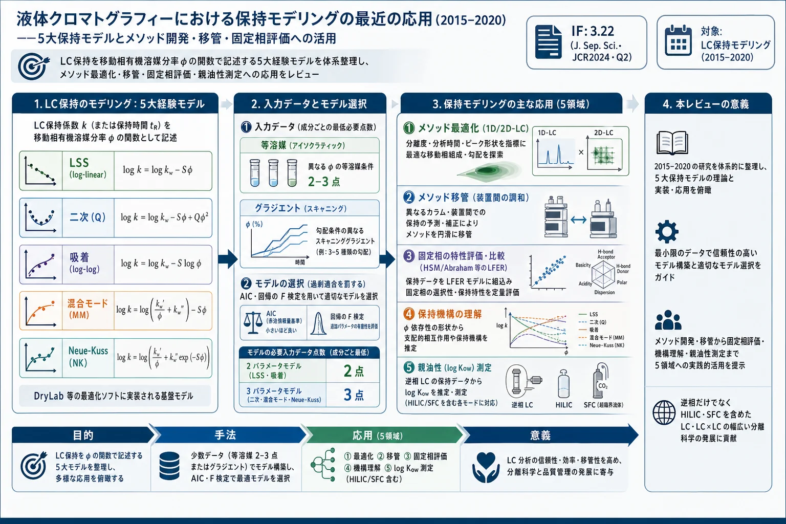

液体クロマトグラフィーにおける保持モデリングの最近の応用（2015–2020）——5大保持モデルとメソッド開発・移管・固定相評価への活用

<!-- den Uijl MJ, Schoenmakers PJ, Pirok BWJ, van Bommel MR. Recent applications of retention modelling in liquid chromatography. J Sep Sci 2021;44:88-114. doi:10.1002/jssc.202000905 の全訳密度日本語版。 -->
補足（本サイトでの位置づけ）: 本論文は生薬研究ではなく、LC の保持（retention）を数式モデルで記述・予測する「保持モデリング」の最近5年（2015–2020）を俯瞰した総説 である。当サイトで直前に扱った Dolan-Snyder-Quarry 1987（DryLab の原典、log k'=log kw−Sφ の LSS モデル）の、30余年後の到達点にあたる。生薬・漢方の指紋分析や多成分定量はグラジエント LC/UPLC・HILIC を多用し、その分離条件を合理的に決めるには保持予測が要る。本総説は、①どの保持モデル（LSS・二次・吸着・混合モード・Neue-Kuss）をどのモード（逆相・HILIC・SFC・2D-LC）で使うか、②何点のデータで／等溶媒かグラジエントか、③モデルの当てはまりをどう検証するか（AIC・F検定）、④それをメソッド最適化・移管・固定相評価・親油性測定にどう活かすか、を体系的に示す。とくに HILIC（親水性相互作用）は生薬の極性成分（配糖体・アミノ酸・糖）の分析で重要で、混合モードモデルの解説は生薬メソッド開発に直結する。当サイトの「in silico HPLC の機械学習」「DryLab 原典」「実験計画法・望ましさ関数」と一続きの、保持予測の現在地を示す文献。
書誌情報
- 原題: Recent applications of retention modelling in liquid chromatography
- 和題（本稿）: 液体クロマトグラフィーにおける保持モデリングの最近の応用
- 著者: Mimi J. den Uijl（責任著者）, Peter J. Schoenmakers, Bob W. J. Pirok, Maarten R. van Bommel
- 所属: アムステルダム大学 van 't Hoff 分子科学研究所 分析化学グループ／アムステルダム分析科学センター（CASA）／アムステルダム大学 人文学部 文化遺産保存・修復（オランダ）
- 責任著者: M. J. den Uijl（M.J.denUijl@uva.nl）
- 掲載誌: Journal of Separation Science 2021, 44(1), 88–114（レビュー論文）
- DOI: 10.1002/jssc.202000905
- 受理経緯: 2020年8月20日受付 / 2020年10月2日改訂受付 / 2020年10月12日受理
- 資金: オランダ科学研究機構（NWO, 助成番号15506）
- ライセンス: © 2020 The Authors。Journal of Separation Science（Wiley-VCH GmbH）。CC BY オープンアクセス
- キーワード: 親油性測定／メソッド最適化／メソッド移管／固定相特性評価／保持機構
- 雑誌インパクトファクター: 3.22（Journal of Separation Science・JCR2024・Q2。出典により2.9とも記載）
主要略号: ADS（吸着）、AIC（赤池情報量規準）、ANN（人工ニューラルネットワーク）、GA（遺伝的アルゴリズム）、HILIC（親水性相互作用クロマトグラフィー）、HSM（疎水性減算モデル）、IEX（イオン交換）、LFER（線形自由エネルギー関係）、LSS（線形溶媒強度）、MM（混合モード）、NK（Neue-Kuss）、NPLC（順相 LC）、PAH（多環芳香族炭化水素）、Q（二次）、QSRR（定量的構造-保持相関）。
要旨（Abstract）
液体クロマトグラフィー（LC）における保持モデリングの最近（2015–2020）の応用を包括的にレビューする。より長い歴史をもつ本分野の基礎を要約する。保持モデリングは、保持機構研究、親油性（lipophilicity）などの物理パラメータ決定、そしてメソッド開発・最適化・移管、固定相の特性評価・比較など、より実務的な目的に用いられる。本総説は移動相組成が保持に及ぼす影響に焦点を当てるが、他の変数やその影響を記述する新しいモデルも考慮する。最も一般的な5つのモデル——log-linear（線形溶媒強度, LSS）モデル、二次（quadratic）モデル、log–log（吸着）モデル、混合モード（mixed-mode）モデル、Neue-Kuss モデル——を詳細に扱う。モデルパラメータ決定のための等溶媒法・グラジエント溶出法を検討し、当てはめモデルの評価・検証を論じる。1次元・2次元 LC 分離の開発・最適化に保持モデルを適用する戦略を議論し、全体的結論といくつかの具体的推奨で締めくくる。
1. 序論（Introduction）
LC は分析化学者の道具箱で最も本質的で普及した技術の一つ。保持モデリングは、迅速なメソッド開発に利用できる有用な技術である。LC では、分析対象が非移動固定相と移動相の間に分配され、カラムを移動する時間が 保持時間 tR と呼ばれる：
$$ t_R = t_0(1 + k) \tag{1} $$
t0＝カラムの死時間（hold-up time）、k＝保持因子。k は分配係数 K と次式で関係する：
$$ k = \frac{q_s}{q_m} = \frac{c_s}{c_m}\frac{V_s}{V_m} = K\frac{V_s}{V_m} \tag{2} $$
qm・qs＝移動相・固定相中の分析対象総質量、cm・cs＝両相の濃度、Vm・Vs＝カラム内各相の総体積。k は pH・温度・移動相組成（強溶媒の体積分率 φ）など多数のパラメータに依存する。k をこれらパラメータに関係づける式が 保持モデル（retention models） であり、保持モデリングとはそのモデルを実験データに当てはめる過程である。
LC は等溶媒（isocratic）またはグラジエント（gradient）モードで行える。等溶媒では移動相組成がラン中一定で保持因子も一定。グラジェントでは移動相強度をラン中上げるため、移動相中の分析対象総質量が増え保持因子が下がる。グラジエント溶出で k を溶媒強度に関係づけるにはグラジエント方程式を使う。成分がグラジエント開始前に溶出するなら tR は式(1)（k は初期有機修飾剤濃度での保持因子）で計算。グラジエント中に溶出するなら直線グラジエントの一般式[1]：
$$ \frac{1}{B}\int_{\varphi_{init}}^{\varphi_{init}+B(t_R-\tau)}\frac{d\varphi}{k(\varphi)} = t_0 - t_{init} + \frac{t_D}{k_{init}} \tag{3} $$
k(φ)＝保持モデル、B＝グラジエントの傾き（φ=φinit+Bt）、τ＝dwell time tD・グラジエント開始前時間 tinit・死時間 t0 の和。グラジエント後に溶出する場合は式(4)（tG＝グラジエント時間）。
保持モデリングは、多くの LC・超臨界流体クロマトグラフィー（SFC）モードで迅速・効率的なメソッド開発を助ける。応用領域は：新規固定相の特性評価と保持機構の確立、メソッド最適化（より良い分離）、メソッド移管（異なる装置間の調和）、保持のより正確な記述、そしてクロマトグラフィー外（医薬・環境科学）でのオクタノール-水分配係数（log Kow）測定や汚染物質の生態系残留性決定[2, 3]。
保持モデルの一般形は「保持パラメータ」と「系パラメータ・分析対象パラメータを組み合わせた関数」の関係として記述できる。特定のモデル群 線形自由エネルギー関係（LFER） では、関数が少数（通常5個）の積項の和からなり、各項は系パラメータ si と分析対象パラメータ ai からなる：
$$ \log k_{i,s} = \sum_{i=1}^{n} a_i s_i \tag{5} $$
各項は分析対象と固定相の特定相互作用に緩く対応。例：Snyder の 疎水性減算モデル（HSM）[4, 5]（固定相パラメータ＝疎水性・立体障害・水素結合酸性/塩基性・陽イオン交換活性）、Abraham のモデル[6, 7]（モル屈折・溶質分極率・有効水素結合酸性/塩基性・McGowan 特性体積）。これらの目的は保持予測でなく 固定相の特性評価・分類 で、移動相組成の影響は記述しない。
保持モデリングの別角度は 定量的構造-保持相関（QSRR）[10]（分析対象の構造記述子と保持の統計的関係。構造パラメータが計算できれば新化合物の保持を予測。QSAR/QSPR と類似）。第3のアプローチは 人工ニューラルネットワーク（ANN）[12]（大規模データが必要[13]）。最後のアプローチは （半）経験モデル（保持を記述する抽象パラメータを含む。少ない入力データで内挿/外挿でき、LC メソッド開発支援に極めて有用[14–17]）——本総説は以降これらに絞る。
経験的保持モデルは、化学の特定相互作用/機構に結びつかない抽象パラメータをもち、分析対象・測定パラメータ（有機修飾剤分率・塩濃度・pH 等）を k に関係づける。通常 log10 k または ln k を用いる。モデルに含まれない変数（固定相・温度）は妥当性のため一定に保つ。計算資源の増大に伴い、in silico 技法は徹底的な試行錯誤実験より魅力的になった。
2. 背景理論（Background Theory）
多くの場合、修飾剤の体積分率 φ が最重要変数である。広く使われるのは2〜3パラメータの少数モデル——線形溶媒強度（LSS）・二次（Q）・吸着（ADS）・混合モード（MM）・Neue-Kuss（NK）。DryLab[18]・PEWS2[19]・MOREPEAKS[20] などの最適化プログラムはこれらのモデル（すべて φ ベース、2〜3パラメータ）に依拠する。
2.1. モデル
2.1.1. 線形溶媒強度（LSS）モデル
逆相 LC の log-linear モデルは Snyder らが移動相組成 φ の関数として保持を記述するために導入[21]。LSS モデル（分配モデルとも）：
$$ \ln k = \ln k_0 - S_{LSS}\varphi \tag{6} $$
ln k0（ln kw とも表記）＝純水中の等溶媒保持因子、φ＝有機修飾剤の体積分率、傾き S_LSS＝溶質と有機修飾剤の相互作用に関係。パラメータは異なる φ の2等溶媒ランから計算できる。過去6年（2015–2020）で見つかった LSS モデルの90文献のうち55%が1次元逆相 LC（RPLC）、残りは 2D-LC・HILIC・SFC など（原著 Fig. 1A）。
2.1.2. 二次（Q）モデル
Schoenmakers らが導入した二次モデルは log-linear モデルに1パラメータ加えた拡張で、ln k と φ の関係を線形でなく凸にする[22]：
$$ \ln k = \ln k_0 + S_1\varphi + S_2\varphi^2 \tag{7} $$
S1・S2＝有機修飾剤の影響を記述する経験係数。過去6年の45文献の主用途は RPLC（47%）、HILIC 記述（23%）も（Fig. 1B）。
2.1.3. 吸着（ADS）モデル
1960–70年代に複数研究者（Soczewinski[23]・Jandera[24]・Snyder[25]）が順相 LC（NPLC）・TLC で提示。吸着を説明する log–log モデル / Snyder-Soczewinski モデル[23–26]：
$$ \ln k = \ln k_0 - n\ln\varphi \tag{8} $$
n＝溶媒和数（強溶離液成分と分析対象の吸着分子が占める表面積比）。LSS と対照的に ln k は ln φ に線形。当初 NPLC 用（12%）だが、今は主に HILIC（35%）・RPLC（30%）で使用（Fig. 1C）。
2.1.4. 混合モード（MM）モデル
Jin らが HILIC の保持記述に開発。HILIC と RPLC の両保持モードを説明でき、LSS と ADS の組合せ[27]：
$$ \ln k = \ln k_0 + S_1\varphi + S_2\ln\varphi \tag{9} $$
S1＝溶質と溶媒の相互作用、S2＝溶質と固定相の相互作用。主用途は HILIC（69%、Fig. 1D）。
2.1.5. Neue-Kuss（NK）モデル
5大モデルで最新の3パラメータモデル（Nikitas ら[28, 29]の別モデルに基づく）：
$$ \ln k = \ln k_0 - \ln(1 + S_1\varphi) - \frac{\varphi S_2}{1 + S_1\varphi} \tag{10} $$
S1＝ln k vs φ プロットの傾き、S2＝曲率。グラジエント溶出保持時間を得る積分で厳密解が得られる。Neue と Kuss は2010年に別バージョンを発表[31]：
$$ \ln k = \ln k_0 + 2\ln(1 + S_1\varphi) - \frac{\varphi S_2}{1 + S_1\varphi} \tag{11} $$
（式10と11の違いは第2項の符号と因子2のみ。）NK はグラジエント RPLC 用に開発され（応用の45%）、HILIC（25%）にもよく適用（Fig. 1E）。
2.2. データの測定と使用
2.2.1. 等溶媒データかグラジエントデータか
本総説の全経験モデルは等溶媒・直線グラジエント両分離の最適化に使われてきた。等溶媒データ点 は異なる有機修飾剤濃度で収集する必要があり、全成分が各 φ で妥当な時間に溶出するわけでないため面倒。グラジエント溶出 は全分析対象を1ランで妥当な時間に溶出できる。グラジエント溶出保持時間や溶出時の修飾剤濃度を計算するには、保持モデルをグラジエント方程式（式3, 4）に数値積分する。グラジエント実験（スキャニンググラジエント）でパラメータを決めるには逆順で行い、実験間で 有効勾配（effective steepness）b を変える必要がある：
$$ b_{LSS} = S_{LSS}Bt_0 = S_{LSS}B\frac{V_0}{F} \tag{12} $$
B＝グラジエントの傾き（Δφ/Δt）、V0＝hold-up 体積、F＝流速。有効勾配は (i) グラジエントの傾き B、(ii) カラム体積、(iii) 流速 のいずれかで変えられる。
予測精度は選ぶ溶出モードに影響される。Vivó-Truyols らの誤差解析[32]は、等溶媒実験で得た入力データが最も正確な予測を与える と結論。グラジエント実験に基づくモデルでも等溶媒溶出を予測できるが、溶媒組成の限られた範囲でのみ正確[32–35]。グラジエント保持はグラジエントスキャニング実験から予測できる[36–38]が、実験データ要件の研究は少ない。予測精度は、予測グラジエントの傾きとスキャニンググラジェントの傾きの近さ、内挿か外挿か、実験精度などに依存する[39]。
2.2.2. 入力データ点数とモデル評価
経験モデルのパラメータ（保持パラメータ）計算には最小データ点数の制約がある。2パラメータモデル（ADS・LSS）は成分ごと最低2点、3パラメータモデル（MM・NK・Q）は最低3点 が必要。NK 等はより多くのデータで使われることが多い[31]。
パラメータを増やすと過剰適合（overfitting）のリスクが増す。複数モデルを比較する際、パラメータ数が真のモデル品質を欺きうる。この偏りを補正するため 赤池情報量規準（AIC）（パラメータ追加を罰する）：
$$ AIC = 2p + n\left[\ln\left(\frac{2\pi \cdot SSE}{n}\right) + 1\right] \tag{13} $$
SSE＝残差平方和、p＝パラメータ数、n＝観測数。低い（より負の）値ほど良い当てはめで、正しいモデル選択を助ける[15, 41–45]。もう一つは 回帰の F 検定（第3項の追加が有意かを調べる。当てはめの良さでなく3パラメータモデルとその縮約形の差を評価）。5モデルでは (i) Q と LSS、(ii) MM と LSS、(iii) MM と ADS の組合せで F 検定可能。
訳者補足（どのモデルをいつ使うか）: ざっくり言うと、逆相の穏やかな範囲では LSS（直線） で足り、曲率が出るなら 二次（Q） や Neue-Kuss（NK）、HILIC のような吸着支配や両モード併存では 吸着（ADS） や 混合モード（MM） が合う。パラメータを増やせば当てはまりは良くなるが過剰適合の危険があるので、AIC や F 検定で「3パラメータ目を足す価値があるか」を客観的に判定する——これが生薬の極性成分（HILIC）や多成分グラジエント分離のメソッド開発でモデルを選ぶ実務指針になる。
3. 方法（応用領域）
文献レビューから、保持モデリングが適用される 5つの主要領域 を特定した（原著 Fig. 2 にワークフロー要約）。
3.1. メソッド最適化（Method optimization）
3.1.1. 1次元分離の最適化
移動相成分と固定相を選んだ後、保持モデリングで分離を最適化できる。例：
- Zhang ら[47]: 多孔質グラファイトカーボンカラムでの植物油分離を、イソプロパノール-トルエングラジエントで LSS モデルで最適化。トルエン分率のトリアシルグリセロール保持への効果（S_LSS）が全成分で類似 → 全トルエン濃度で同じ選択性。逆に S_LSS の差は選択性最適化に修飾剤濃度がどれだけ使えるかを示す。
- Fekete ら[48]: タンパク質で非常に大きな S_LSS 値（2スキャニンググラジエントから算出）、有機修飾剤を0.8%増やすと保持が10分の1に。こうした高 S_LSS がタンパク質 RPLC でグラジエント溶出が不可欠な理由。保持能の増す複数カラムを直列連結し多段グラジエントで選択性改善[49, 50]。
- 試料溶媒の考慮: 溶離液と試料溶媒の溶出強度差が大きいとブレークスルーやピーク変形が起こりうる[51, 52]。Jeong ら[51]は高溶出強度溶媒の弱溶離液への注入効果を LSS・NK モデルでシミュレーション（局所保持因子・ピーク幅を予測、実測と一致）。
- Boateng ら[53]: メトキシフェニジンの3位置異性体分離を温度・pH・有機修飾剤濃度で最適化。pH に ADS、φ に LSS/Q、温度に van't Hoff 式を当てはめ、3因子×3水準（3×3 データ）で予測誤差5%未満の最適分離。
- ピーク圧縮: Vaňková ら[54]は LSS モデルでグラジエント勾配のピーク圧縮への効果を検討（溶出時の φe・ke を決定、ke をピーク幅に関係づけ）。グラジエント時間/カラム死時間比 = 12 が小分子で最良の速度論性能。Gritti[55]は NK モデルに基づく新式で複雑グラジエントのピーク広がりを予測（線形・非線形モデルで有意差なし）。
3.1.2. 2次元分離（2D-LC）の最適化
2次元 LC では両次元の直交性・保持を保持モデルで最適化し、ピーク容量を最大化する。
3.1.3. 精緻な戦略と最適化パッケージ
DryLab・PEWS2・MOREPEAKS 等のソフトが複数モデルを用いて自動最適化する。
3.2. メソッド移管（Method transfer）
異なる装置（dwell 体積・カラム寸法が異なる）間でメソッドを調和させる。保持モデルで一方の装置の条件を他方に翻訳し、同等の分離を再現する。
3.3. 固定相の特性評価・比較
LFER（HSM・Abraham）で固定相を疎水性・水素結合性・イオン交換活性などのパラメータで数値化し、多数の固定相を表化して比較・分類できる[8, 9]。HILIC の混合モードモデル（3.3.2節）で固定相の RPLC/HILIC 両保持機構の寄与を評価。
3.4. 保持の理解と記述
保持機構研究で、どのモデルが実測をよく記述するかから保持機構（分配 vs 吸着 vs 混合）を推論する。
3.5. 親油性（lipophilicity）測定
医薬・環境科学で、RPLC 保持（log kw 等）から化合物のオクタノール-水分配係数（log Kow）を推定する。新規合成品の親油性や汚染物質の生態系残留性の指標となる[2, 3]。
4. 全体的結論と推奨（Conclusions & Recommendations）
- モデル選択: 逆相の穏やかな範囲では LSS で十分だが、曲率がある場合は Q・NK、HILIC や吸着支配系では ADS・MM を選ぶ。過剰適合を避けるため AIC・F 検定でパラメータ数の妥当性を客観評価する。
- 入力データ: 最高精度が必要なら、シミュレーションで想定するモードに合った実験（等溶媒/等溶媒、グラジエント/グラジエント）を使う。等溶媒データが一般に最も正確な予測を与えるが、グラジエント（スキャニング）は全成分を1ランで測れる利点がある。有効勾配 b を実験間で十分変える。
- 応用の広がり: 保持モデリングはメソッド開発・最適化だけでなく、メソッド移管・固定相評価・保持機構解明・親油性測定へと広がり、1D/2D-LC・HILIC・SFC を横断する汎用ツールとなっている。
- 計算資源の増大により in silico 保持モデリングは試行錯誤に代わる標準になりつつあり、モデル・データ要件・検証法の標準化が今後の課題である。
主要記号・モデル一覧
| モデル | 式 | パラメータ数 | 主用途 |
|---|---|---|---|
| 線形溶媒強度（LSS） | ln k = ln k0 − S_LSS·φ | 2 | RPLC |
| 二次（Q） | ln k = ln k0 + S1·φ + S2·φ² | 3 | RPLC・HILIC |
| 吸着（ADS, log-log） | ln k = ln k0 − n·ln φ | 2 | HILIC・RPLC・NPLC |
| 混合モード（MM） | ln k = ln k0 + S1·φ + S2·ln φ | 3 | HILIC |
| Neue-Kuss（NK） | ln k = ln k0 + 2ln(1+S1·φ) − φS2/(1+S1·φ) | 3 | グラジエント RPLC・HILIC |
- k＝保持因子、k0/kw＝純水中の等溶媒保持因子、φ＝有機修飾剤体積分率、t0＝死時間、tR＝保持時間、tD＝dwell time、tG＝グラジエント時間、B＝グラジエントの傾き、b＝有効勾配、AIC＝赤池情報量規準、SSE＝残差平方和。
主要参考文献（抜粋）
- [1] 直線グラジエントの一般式（グラジエント方程式）。
- [4, 5] Snyder の疎水性減算モデル（HSM）。
- [6, 7] Abraham の LFER モデル。
- [18] DryLab（最適化プログラム）。[19] PEWS2。[20] MOREPEAKS。
- [21] Snyder et al. LSS モデルの導入。
- [22] Schoenmakers et al. 二次モデル。
- [23–26] Soczewinski・Jandera・Snyder 吸着（log-log）モデル。
- [27] Jin et al. 混合モードモデル。
- [28–31] Nikitas・Neue・Kuss モデル。
- [32] Vivó-Truyols et al. 等溶媒/グラジエント予測の誤差解析。
- [40] 赤池情報量規準（AIC）。
（全参考文献は原著参照。）